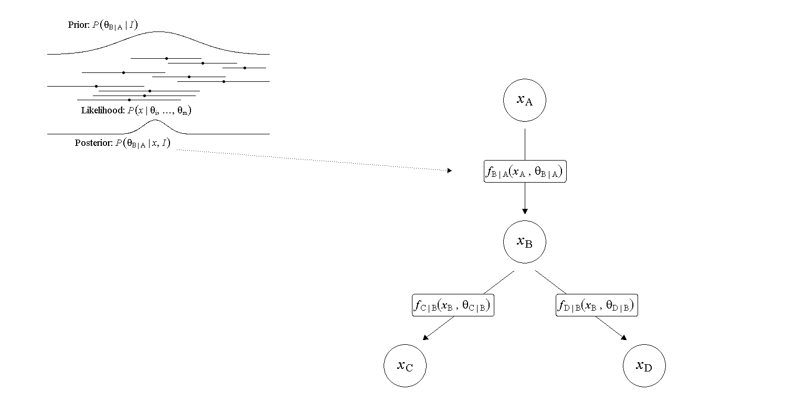
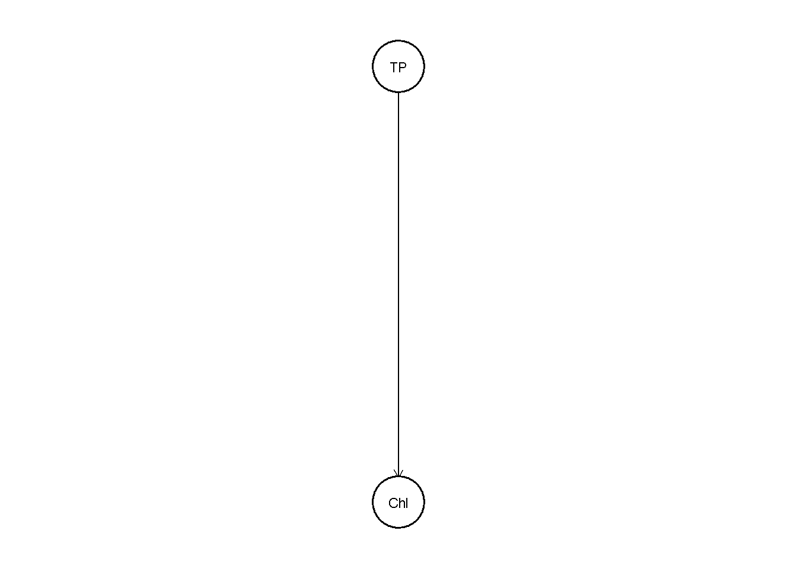
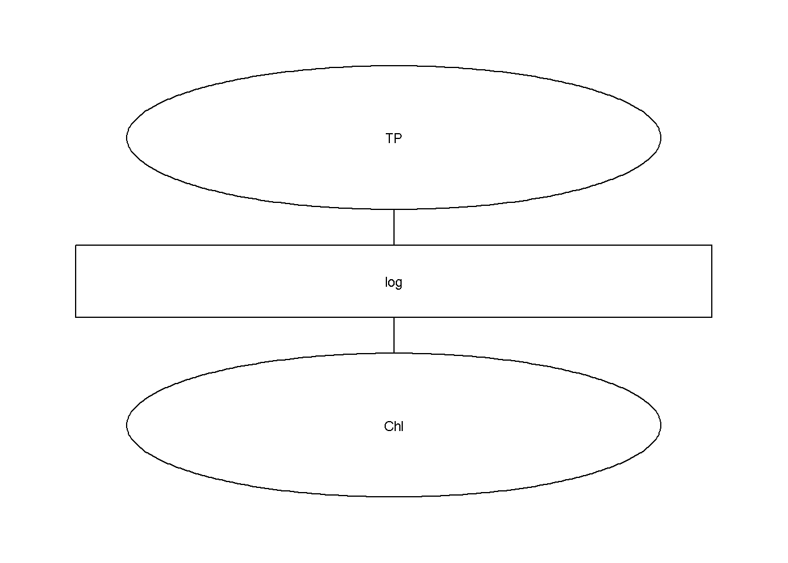

4 Posterior Predictive Meta-Analytic Network
Ecological information is accumulated across numerous independent studies that describe interactions among biotic and abiotic components of ecosystems. Although this literature contains a wealth of ecological information, it is dispersed across publications, expressed using diverse statistical measures, and often communicated qualitatively. Consequently, ecological understanding remains fragmented rather than synthesized into coherent quantitative networks.
This fragmentation is unavoidable. Ecological systems are high-dimensional, and no individual study can simultaneously measure all relevant abiotic and biotic variables. Furthermore, ecological understanding develops as new mechanisms and interactions are better understood. As a result, ecological networks are necessarily incomplete and continuously updated from scattered information.
Existing syntheses frequently describe interactions only as positive or negative relationships. While such qualitative descriptions are useful for conceptual understanding, they provide little information about the magnitude of ecological responses. Conversely, conventional meta-analyses summarize information using standardized effect sizes, such as Cohen’s d,
\[ d=\frac{\overline{x}_{treatment}-\overline{x}_{control}}{SD_{pooled}} \]
while the enable comparison among study, they remove the original measurement units. Consequently, these effect sizes are difficult to interpret directly in ecological prediction because identical standardized effects can correspond to very different absolute ecological changes (Baguley, 2009; Tukey, 1969).
For predictive ecological networks, quantities expressed in natural units are often more informative. For example, estimating the change in EPT abundance associated with a 1 \(mg\cdot L^{-1}\) decline in dissolved oxygen yields a relationship that can be directly applied to field observations, propagated through ecological networks, and evaluated against future measurements. Such quantities possess immediate operational meaning for prediction and management.
However, no general framework currently exists for systematically combining these heterogeneous quantitative relationships into an evolving ecological network. We therefore introduce the Posterior Predictive Meta-analytic Network (PPMN), a modular framework that synthesizes dispersed ecological information into a coherent predictive network. The PPMN combines Bayesian meta-analysis, probabilistic simulation, network modelling, and sequential updating to estimate and propagate ecological relationships without requiring a complete multivariate dataset. The framework supports prediction, structural evaluation, scenario exploration, and continual refinement as new information becomes available. In this way, qualitative ecological understanding is progressively formalized into an updateable quantitative network.
4.1 Building block
A PPMN describes an ecological system as a generalized directed Bayesian network. Vertices (nodes), represent ecological variables, whereas directed edges (links), are represented by parameterized edge-functions. Each edge-function contains one or more model parameters. Information about these parameters is represented by probability distributions rather than by single fixed values. Together, the network structure, edge-functions, and parameter distributions determine the predictive behavior of the PPMN.
The figure below illustrates a simple PPMN containing four variables and three parameterized edge-functions. For each edge-function, information from prior distributions and study-derived estimates is synthesized into a posterior parameter distribution.

Constructing a PPMN therefore requires two related specifications: the directed network structure and the parameterized edge-functions associated with each incoming edge. The following section shows how these components are defined in the package.
4.2 Specifying netowrk structure
We begin by defining each variable (\(X = \{ x_1, ..., x_n \}\)) that constitute the network and the directed dependencies among them. Each non-root vertex must be associated with a link-function that maps its parent variable \(x_p\) to a child vertex \(x_c\). A link-function is expressed as
\[x_c=f_{c|p}(x_p, \theta_{c|p})\]
with it corresponding parameter \(\theta_{c|p}\). An example could be the relations between Total Phosphorus (TP) to Chlorophyll-a (Chl). We fitted for example three models A-D and found one intercept (\(b0\)) and slope (\(b1\)) in two separated studies. The function is formally expressed as.
\[
x_{Chl}=f_{Chl|TP}(x_{TP}, \theta_{Chl|TP})
\]
However, the actual function is a linear equation where both the dependent and independent variable are log transformed. Transforming the function to its predictive form
\[
x_{Chl}=f_{Chl|TP}(x_{TP}, \theta_{Chl|TP}) = exp\{\beta_0 + \beta_1 \cdot Log(x_{TP})\}
\]
This happens automatically when a GLM with log link and log-transformed independent variable (TP) was fitted. We just need a data frame (example4) with these colums (the column Comment could be omitted). In this data frame the point estimate is added and the error, plus the source, edge and parameter. The parameter b0 = \(\beta_0\) and b1 = \(\beta_1\). These are the minimal columns that need to be filled in in this data frame.
Since the fitted GLMs had a log link the function (fun) is log, the edge-functions names is Chl~TP and we also transformed (trans) the independent variable and therefore use log. If a log transformation was not possible and a square-root transformation was used sqrt can be used. If no transformation has been applied the argument does not have to be used and can be omitted. Other transformations can be fitted on request if needed.
## # A tibble: 6 × 9
## Source Authors Comment `function` transformation edge parameter estimate error
## <chr> <chr> <lgl> <chr> <lgl> <chr> <chr> <dbl> <dbl>
## 1 A A NA log NA Chl~TP b0 -0.8 0.2
## 2 A A NA log NA Chl~TP b1 1.1 0.56
## 3 B A NA log NA Chl~TP b0 -0.2 0.5
## 4 B A NA log NA Chl~TP b1 0.93 0.3
## 5 C C NA log NA Chl~TP b0 -1.1 0.8
## 6 C C NA log NA Chl~TP b1 1.05 0.3Each parameter has a prior appointed. If no prior is given the default prior has a mean of 0 and se of 1000. For the intercept we assume that we a prior already know it falls somewhere around -0.5 (-1.5 and 0.5) and for the slope around 1 (0 and 2) and we assume it cannot be smaller than 0 and therefore truncate the lower boundary (trunc_a_b1) at 0.
#we need to create a formula
formula=list(c(fun="log", edge="Chl~TP", trans="log",
prior_mu_b0=-0.5, prior_se_b0=0.5,
prior_mu_b1=1, prior_se_b1=0.5, trunc_a_b1=0))This formula represents a single edge-function from TP to Chl. To construct the foundational PPMN, both the formula and data need to be introduced into the build_ppmn function.
## Using "tree" as default layout
## Using "tree" as default layout
## Using "tree" as default layoutThis single link can be display in a DAG

Or as Bipartite Network where the boxes represent the functions and the variables the circles.

Predictions can be made using the predict_ppmn function.